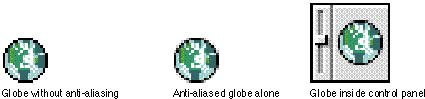

|
Anti-AliasingA technique for enhancing the appearance of your icons is to smooth angular or curved lines by coloring pixels on jagged edges. This technique is called anti-aliasing. Change the pixel color where you can see a visual break inthe outline of a black-and-white icon. Figure 8-27 shows an icon before anti-aliasing, after anti-aliasing, and then in the context of a control panel icon. Figure 8-27 Correct anti-aliasing  In anti-aliasing, you typically add pixels to an outline shape. Since the Finder uses only one mask for each size in the icon family, make sure that all your icons have the same outline shape. That is, when you anti-alias icons, don't add pixels or shadows to the outline shape of color icons. Figure 8-27 shows how anti-aliasing works well within an icon. The Finder uses the icon mask for alignment and transformation effects, so make sure that the mask and all your icons are appropriate for each other. If you add too much anti-aliasing to the icons, they
appear smooth, but |